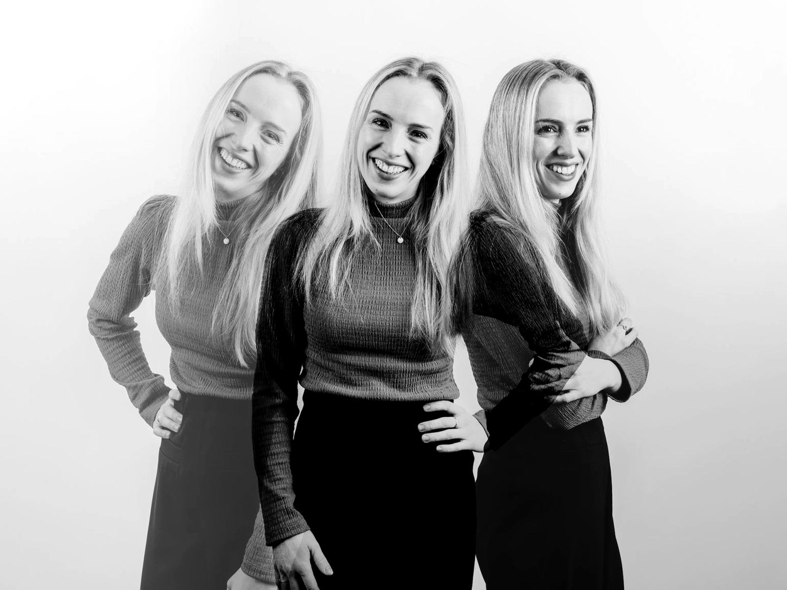

FloorMutsaers
Online marketingspecialist met meer dan tien jaar praktijkervaring, aan bureauzijde én aan merkkant. Nu leid ik de marketeers van morgen op.
Allround docent bij Fontys SPECO Sportmarketing
Didactisch bekwaam (BKO en BKE)

Bij Indicia en IO werkte ik aan leverancierszijde voor klanten, bij Sacha en Manfield intern op de marketingafdeling, en bij Fontys als docent.
Niet bang om dingen uit te proberen
Ik ben allround docent bij Fontys SPECO Sportmarketing en online marketing is mijn specialisme. Mijn overstap van het bedrijfsleven naar het onderwijs bewijst dat ik niet bang ben om dingen uit te proberen, en deze website ook: die bouwde ik zelf met AI.
Meer over mijUitgelicht werk
Van leverancier naar opdrachtgever en weer terug, en daarna het onderwijs in.
Sacha en Manfield · Intern, marketingafdeling
Internationale webshops en omnichannel loyalty
Aan de merkkant: webshops in nieuwe landen, een loyaltyprogramma en de koppeling tussen webshop en winkel.
Lees meerIO · Digitaal bureau, leverancierszijde
Digitale oplossingen voor zorg, overheid en industrie
Senior Project Coördinator voor klanten als Erasmus MC, Layher en Zeeland.com, in sprints van twee weken.
Lees meerIndicia · Digitaal bureau, leverancierszijde
Websites, webshops en social media voor merken
Project Manager voor klanten als Coolcat, Carlsberg Group en Van Mossel.
Lees meerFontys SPECO Sportmarketing · Onderwijs
Kennishouder online marketing
Mijn praktijkervaring breng ik direct de klas in, als docent, coach en kennishouder.
Lees meerWaar ik goed in ben
Meer dan tien jaar werkte ik aan beide kanten van de tafel: als leverancier bij digitale bureaus, en als opdrachtgever op de marketingafdeling van een retailer. Die praktijk neem ik mee de klas in.
E-commerce
Webshops lanceren in nieuwe landen, omnichannel loyaltyprogramma's en de koppeling tussen webshop en winkel.
SEO en conversie
Gecertificeerd in SEO-copywriting en conversieoptimalisatie: teksten die gevonden worden en overtuigen.
Social media en reputatie
Beheer van en advies over social kanalen, reviewplatformen en online reputatiemanagement.
AI en vernieuwing
Ik experimenteer met AI in mijn werk en lessen, van contentcreatie tot het zelf bouwen van deze website.
Digitale projecten
Gecertificeerd Scrum Master en Product Owner Advanced. Eerder ook spreker op de Webwinkel Vakdagen.
Online adverteren
Online campagnes opzetten, van doelgroep en budget tot het meten en evalueren van de resultaten. Een onderwerp waar ik nog altijd les in geef.
Wat anderen zeggen
Als product owner van de publieke website van het Erasmus MC heb ik zo'n 3 jaar heel prettig samengewerkt met Floor, die senior project coördinator was. Maar eigenlijk ook product owner, scrum master en accountmanager... Ze zorgde altijd voor een goede open communicatie met ons als klant, ontzorgde mij door alle overleggen goed in te plannen, voor te bereiden en afspraken na afloop vast te leggen. Ze zat er altijd bovenop dat iedereen zijn afspraken nakwam en dat haar team optimaal werd ingezet voor ons als klant. Ze bewaakte de budgetten goed en zorgde voor duidelijkheid over en inzicht in de kosten. Ook keek ze inhoudelijk kritisch mee naar waar we in de sprints mee bezig waren, kwam ze met suggesties en testte ze mee waar nodig. Floor is niet alleen gestructureerd en betrouwbaar in haar werk, ze is ook een sociaal en gezellig persoon om mee samen te werken.